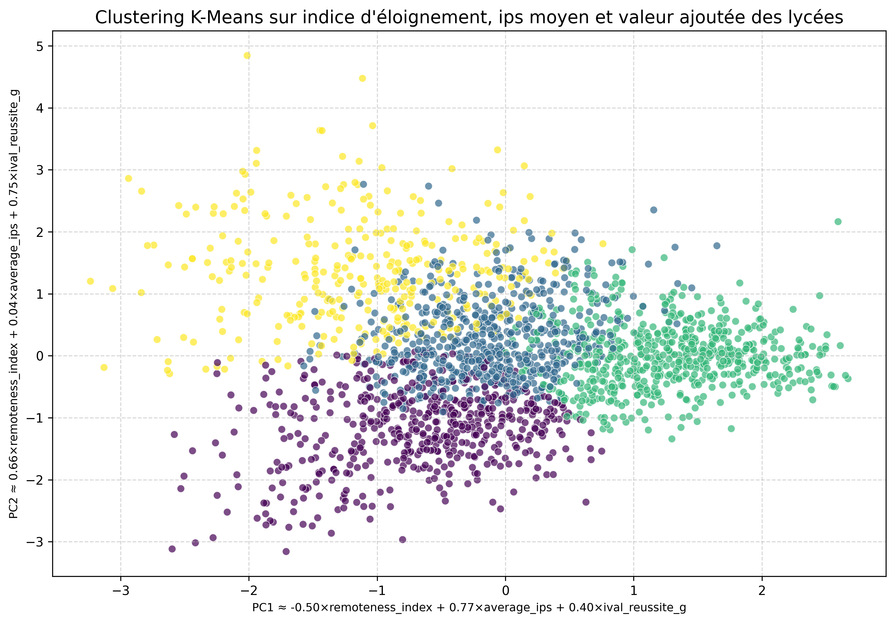

From raw administrative records to a validated clustering pipeline

Removing redundant variables before clustering
Correlation analysis across the available per-school indicators surfaced several redundant pairs — variables that captured the same underlying construct from different angles. Since clustering relies on distance between points, redundant variables would have silently over-weighted whatever they measured. These were pruned systematically, so every remaining feature contributed independent signal.

From a fixed two-variable model to a flexible pipeline
The initial K-Means implementation was hard-coded to one pair of variables and didn't scale to new questions. It was rebuilt to run on any set of standardized features, with no code changes needed for a new dataset. The generalized model surfaced a genuinely non-obvious finding: a cluster of well-equipped schools whose device provision was independent of socio-economic status — a pattern invisible in the original two-variable version.

Clustering by academic year, not by average
The pipeline was extended to cluster each academic year independently rather than averaging across years, preserving year-to-year variation instead of smoothing it away. The main constraint was data coverage: source files didn't consistently track the same schools across years, which limited how far cluster evolution could be followed longitudinally.
DBSCAN as a complement to K-Means
Unlike K-Means, which requires the number of clusters to be fixed in advance, DBSCAN infers structure from local density and explicitly flags outliers as noise instead of forcing them into a cluster. We exposed its radius parameter as a control in the interface, letting users tune analysis granularity themselves — from a coarse, system-wide view down to fine-grained outlier detection — without needing to understand the algorithm underneath.

A self-contained tool for non-specialist analysis
To make the preceding methods accessible without requiring programming knowledge, the pipeline was consolidated into a single standalone interface: three algorithms (K-Means, DBSCAN, K-nearest neighbors) operating on standardized feature vectors, dimensionality reduction via principal component analysis for two-dimensional projection, and multiple complementary views — stacked histograms, two-dimensional scatter plots, per-cluster heatmaps of feature means, and detailed per-school tables.
"A clustering algorithm has no analytical value without a principled rationale for the variables it operates on. Variable selection, not the choice of algorithm, is what determines whether a model reflects the underlying phenomenon."
Matilde Serra Da Costa, project team